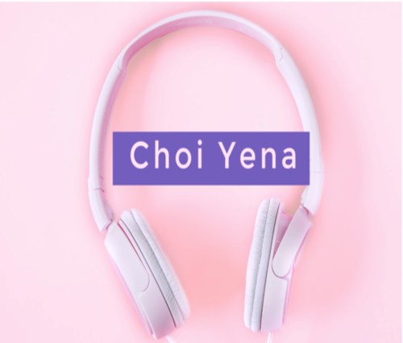
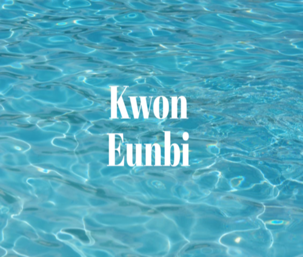

Kpop Soloist artist
My favorite K-pop Soloists:
Choi Yena is a South Korean singer and dancer who debuted as a member of the popular K-pop girl group, IZ*ONE in 2018. When the group disbanded, Choi Yena debuted as a soloist. She has become known for her energetic and charismatic stage presence, often impressing fans with her powerful rapping and captivating performances. The fandom name of Yena is Jigumi. Yena has different types of songs. My favorite songs are Love War and Smartphone. Smartphone is a funny song, it provides you with happy energy the music video will make you laugh. Love War is a different song. The song is very nice. I suggest you listen to it.

Kwon Eunbi was also a singer and dancer who debuted as a member of the popular K-pop girl group, IZ*ONE in 2018. After the group disbanded Eunbi debuted as a soloist. She is known for her strong vocals and impressive dance skills, Eunbi quickly established herself as a valuable member of the K-pop industry. The fandom name of Eunbi is RUBI. My favorite songs from Kwon Eunbi are Underwater and Glitch. Glitch is inside the concept of electronic music. The rhythm is catchy the music video of the song is good. Underwater is its newest song. This song has high vocals, and Eunbi's voice is amazing in this song. Kwon Eunbi will continue to release new songs that will be amazing.
